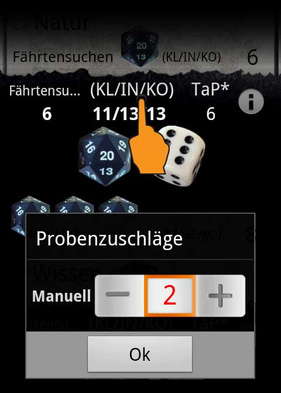

Wird eine Probe durch den Spielleiter noch zusätzlich erschwert oder erleichtert, kannst du dies beim Probenwurf nachträglich anpassen. Klicke hierzu auf die Infozeile, es erscheint dann ein Popup in dem sämtliche Modifikatoren der Probe aufgelistet werden und du eine manuelle Erschwernis hinzufügen kannst.
